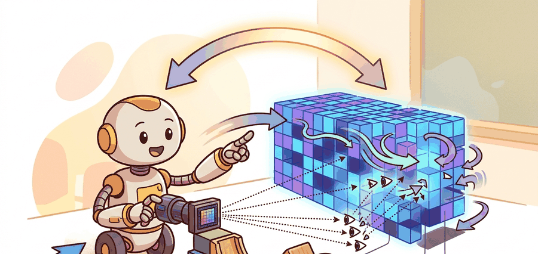

"Perception earns its keep when the next action gets safer, faster, or easier to debug."

Figure 28.5A: Section 28.5: NeRF: implicit radiance fields is easier to reason about when the figure shows the concept, evidence path, and action consequence in one physical situation.
A Patient Embodied AI Agent
Big Picture
NeRF: implicit radiance fields matters because a NeRF stores a scene as a function from 3D position and view direction to density and color. The section treats the topic as action support, not as a free-floating model output.
Why This Belongs In The Loop
In embodied AI, NeRF: implicit radiance fields has to answer four questions: what evidence arrived, what state estimate changed, what action became safer, and what measurement would convince a skeptical builder. This connects the section to coordinate frames, sensor and state estimation, domain randomization, sim-to-real transfer, while keeping the current page self-contained.
The working contract names the observation stream, the state estimate, the action boundary, the timing budget, and the evaluation artifact. That contract prevents a perception score from being mistaken for a robot capability.
Action Is The Test
A representation is useful when it changes a decision boundary. If the same robot command would be sent with or without NeRF: implicit radiance fields, the representation may be interesting, but it has not yet earned a place in the embodied stack.
Figure 28.5.1: NeRF: implicit radiance fields is useful when it changes the action path and leaves an evidence trace for debugging.
Mechanism
The mechanism has four stages. First, sensors produce evidence with units, timestamps, and frame names. Second, the perception module converts that evidence into a state estimate or candidate set. Third, the planner, policy, or controller consumes the estimate under a timing budget. Fourth, the system logs both the chosen action and the consequence so failures can be assigned to the right interface.
This is where Part VI differs from static vision. A static report can stop at a label, mask, depth map, point cloud, pose, map, or route. An embodied report must state uncertainty and action consequence. That extra discipline is what lets OpenCV, Open3D, PyTorch, Segment Anything, DINOv2, Gaussian Splatting, SLAM, and Habitat-style workflows fit into one build path.
Mechanism Check
Inspect units, frame convention, latency, uncertainty, and downstream consumer. A missing frame name or stale timestamp can damage a robot run more than a modest model error.
Worked Miniature
The miniature below keeps the data small enough to inspect by eye. Its purpose is to expose the contract a library implementation must preserve when the example grows into a simulator, robot log, or benchmark panel.
# Build one construct-matched evidence record for NeRF: implicit radiance fields.
# Baseline and shortcut runs should write this same schema.
from dataclasses import dataclass, asdict
@dataclass
class EvidenceRecord:
section: str
observation: str
state_estimate: str
action: str
metric: str
perturbation: str
record = EvidenceRecord(
section="28.5",
observation="sensor stream with units, timestamps, and frame name",
state_estimate="task-relevant belief with uncertainty",
action="robot command or planning choice under evaluation",
metric="same-task success metric computed in one pass",
perturbation="occlusion, pose drift, map noise, delay, or goal ambiguity",
)
print(asdict(record))
Code Fragment 28.5.1 creates an `EvidenceRecord` for NeRF: implicit radiance fields, tying observation, state, action, metric, and perturbation into one comparable artifact.
Expected output: the printed trace for NeRF: implicit radiance fields should expose the method configuration, the measured evidence field, and the failure label. If one of those fields is missing or unchanged under the perturbation, the example is not yet an evaluation artifact.
The next fragment turns evidence into an action ranking. The numbers are small, but the pattern is the same one used when a robot chooses a grasp, view, pose update, local velocity, or navigation target.
# Score candidate robot actions from perception evidence.
# The best action is chosen only after confidence and safety are both checked.
import numpy as np
confidence = np.array([0.83, 0.58, 0.77])
safety_margin_m = np.array([0.12, 0.31, 0.05])
task_value = np.array([0.70, 0.55, 0.95])
score = task_value * confidence + 0.5 * safety_margin_m
best = int(score.argmax())
print({"best_action": best, "score": round(float(score[best]), 3)})
Code Fragment 28.5.2 ranks `best_action` using confidence, `safety_margin_m`, and task value, so NeRF: implicit radiance fields becomes an action decision instead of a standalone prediction.
Library Shortcut
The diagnostic baseline is small enough to inspect by hand before the maintained library path takes over. In practice, the shortcut stack, including Nerfstudio for training and PyTorch for custom field experiments, reduces the workflow to a few API calls while handling batching, optimized kernels, device placement, visualization, and common data formats. Keep the hand-built version for debugging; use the shortcut when the task becomes a repeatable experiment.
Design Recipe
Write a task contract with observation, state estimate, action, metric, perturbation, and failure-label fields.
Define coordinate frames and timing conventions before training, rendering, mapping, or planning.
Build the smallest inspectable baseline, then reproduce the same artifact with Open3D or PyTorch.
Evaluate baseline and shortcut in one pass on one configuration, with the same seeds, logs, and metric code.
Save two representative failures: one perception-driven failure and one downstream failure that perception did not cause.
Common Misconception
The practical mistake is to confuse component quality with closed-loop evidence. For NeRF: implicit radiance fields, separate what the visual or spatial module knows, what the robot state estimator believes, and what the action module is allowed to do with that belief.
Practical Example
A mobile manipulator using NeRF: implicit radiance fields should log the raw observation, processed estimate, chosen action, controller status, and recovery event. If the task succeeds, those logs show why. If it fails, they keep a perception error from being confused with a planning, control, or evaluation error.
Tool Workflow
Tool Choices For NeRF: implicit radiance fields
Need
Good Tool
What The Tool Handles
Inspectable teaching baseline
NumPy and small Python classes
Units, arrays, update rules, and failure labels stay visible.
Production perception or geometry
Open3D and PyTorch
Data loading, optimized kernels, file formats, visualization, and common transforms.
Embodied evaluation
OpenCV
Repeatable interfaces, logging, and perturbation tests.
Self Check
Can you name the observation, state estimate, action, metric, perturbation, and most likely failure label for NeRF: implicit radiance fields without looking back? If one field is vague, the experiment is not ready.
Debugging And Evaluation
When NeRF: implicit radiance fields fails, do not label the whole method as weak. First identify whether the fault entered through sensing, calibration, representation, planning, control, timing, or evaluation. Then rerun exactly one perturbation that isolates the suspected cause. This turns a failed rollout into a reusable diagnostic case.
Use the same habit for figures, code, exercises, and bibliography. A figure should show the action boundary or belief update. A code block should produce a trace that can be compared with a library run. An exercise should ask the reader to vary one assumption and observe how the action changes.
Research Frontier
Current perception and navigation work increasingly combines foundation features, metric geometry, mapping, planning, and closed-loop policy evaluation. Treat vendor demos and new model releases as frontier watch items until independent evaluations report task setup, data, metric, and failure cases.
Section References
Use the chapter bibliography and official tool documentation for NeRF: implicit radiance fields.
For implementation, verify the maintained path with the official documentation for Open3D and reproduce the evidence record before adding scale.
Technical Core
NeRF: implicit radiance fields needs a topic-native core: variables, equations or system contracts, an algorithmic procedure, an expected output, and a failure diagnosis. Figure 28.5.T summarizes the chain this section must preserve when moving from a teaching example to a real embodied system.
Figure 28.5.T: The technical core for NeRF: implicit radiance fields connects assumptions, model, algorithm, evidence, and failure analysis.
Shows the practical library route after the mechanism is understood.
# Technical-core evidence record for NeRF: implicit radiance fields.
# Expected: a method-specific trace with assumptions, metric, and failure label.
record = {
"section": "28.5",
"technical_core": "embodied systems",
"method": "Construct-matched evidence audit",
"evidence": "same-config trace with expected output and failure label",
"tools": "NumPy, PyTorch, Gymnasium, ROS 2, Weights & Biases",
}
print(record)
Code Fragment 28.5.T records the expected technical evidence for NeRF: implicit radiance fields: method, tool path, artifact, and failure label.
Expected output is a reproducible artifact, not a prose claim.
Failure Mode To Test
The section fails when it cannot say what changed in the embodied system and why the evidence supports that change.
Key Takeaway
NeRF: implicit radiance fields is ready for embodied AI work when its assumptions, algorithm, action interface, uncertainty, and failure labels are explicit enough to reproduce.
Exercise 28.5.1
Design a perturbation test for NeRF: implicit radiance fields. Specify the environment, observation stream, action boundary, metric, likely failure label, and library shortcut you would compare against the baseline.